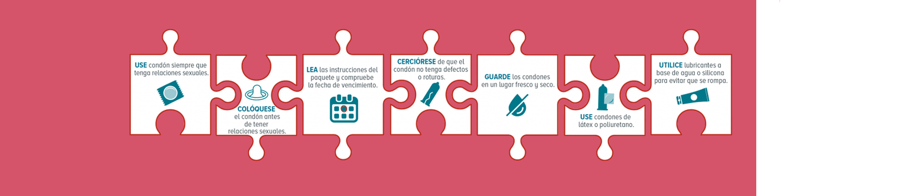

Preservativos
Vaginal y para pene
MÉTODOS ANTICONCEPTIVOS. (MAC)
La ley 18426 “defensa del derecho a la salud sexual y reproductiva vigente desde el 10 de diciembre del 2008 en el artículo 3 inciso f: garantizar el acceso universal a diversos métodos anticonceptivos seguros y confiables.
Quienes se asisten en un prestador público, es decir en los centros de la Administración de los Servicios de Salud del Estado (ASSE), pueden acceder a una cuponera de 15 preservativos por mes sin costo alguno, mientras que quienes son usuarios de los centros privados deberán abonar un ticket de medicamentos. La cuponera tiene una validez de un año. De esta manera, se cumple con el decreto de reglamentación de la Ley de Salud Sexual y Reproductiva en cuanto al acceso
Condón vaginal
{kind=link}
Ventajas y desventajas
• Tiene mucha lubricación, lo que facilita su colocación y la relación sexual.
• Cubre los genitales internos y gran parte de los genitales externos de la hembra y la base del pene, brindándote una mayor protección.
• Personas alérgicas o sensibles al látex pueden usarlo sin problemas, ya que está hecho de un material sintético (nitrilo), que se adapta a la temperatura corporal.
• No es necesario retirarlo inmediatamente después de la eyaculación.
• Se adapta perfectamente a la vagina y permite que el pene se mueva libremente.
Condón de pene


Ventajas y desventajas
• Previene el embarazo eficazmente.
• Es el único método que ayuda a prevenir el contagio de ITS/VIH y SIDA, EPI, cervicitis, clamidia, gonorrea hepatitis b.
• El usuario/a toma responsabilidad en la salud sexual de la pareja.
• No posee efectos secundarios de tipo hormonal.
• Retorno inmediato a la fertilidad luego de la descontinuación de su uso.
Encuesta condón vaginal
Decidimos hacer esta página web informativa sobre los preservativos ya que realizamos una encuesta y notamos que en nuestro país hay una desinformación acerca de los preservativos vaginales, pero sin dejar de lado el preservativo para pene
{kind=link}
{kind=link}
{kind=link}
{kind=link}
{kind=link}
{kind=link}